“CAGE”-ing the methicillin-susceptible Staph (MSSA) Biofilms Away
Isabelle Shin
Internal Advisor: Tom Talasek External Advisor: Andy Koppisch Internship Location: Northern Arizona University
Abstract
Recently, more and more pathogens have been becoming antibiotic-resistant such as Candida albicans (C. albicans), Streptococcus mutans (S. mutans) species, and methicillin-resistant Staphylococcus aureus (MRSA)/methicillin-susceptible Staphylococcus aureus (MSSA). Thus, it is necessary to turn to alternative solutions to cure certain diseases or inhibit the further growth of these harmful pathogens. One solution that the lab, a biochemistry lab located at NAU, where I am interning, investigates is the usage of ionic liquids/deep eutectic solvents (IL/DES). Ionic liquids are molten salts known to treat specific antibiotic-resistant pathogen biofilms. My lab aims to use various DES with varying arginine concentrations that consist of choline, gerinate, cinnamic acid, and arginine (CAGE+Arg). Biofilms are a collection of microbial cells enclosed in an extracellular polymeric substance matrix. They are known to survive under many environmental stressors and initiate/progress the growth of dental decay. The overall goal of our project is to develop DES formulations that are effective against microbial biofilms of oral pathogens that contribute to the decline of oral health. To achieve this goal, we plan to incorporate different concentrations of arginine (a molecule reported to affect positive oral health outcomes) into the new DES (which are materials known to be very effective at reducing the viability of microbial biofilms) and investigate which concentration is most effective in eliminating the pathogen.
Hello, I’m Izzy S., a community-loving, volleyball-playing, and bacteria-killing senior at BASIS Flagstaff. Some of my hobbies are singing, binging Netflix shows, and cuddling with dogs. I have a deep love for science and I always try to connect what I learn in the classroom to what I learn in my biochemistry lab located in NAU.
Through the NAU C.A.R.E. program, I began my research internship, created scientific posters of my research, and presented at multiple American Indian Science and Engineering Society (AISES) scientific conferences across the nation. In 2022, I received poster recognition and a Dell Computer from Boeing while attending an AISES conference in Palm Springs.
For the past two summers and academic years, I have been working in this lab with Dr. Koppisch, the lab’s primary investigator, in concocting and utilizing different ionic liquids/deep eutectic solvents (IL/DES) to target different specific antibiotic-resistant pathogens. Ionic liquids are molten salts known to treat specific antibiotic-resistant pathogen biofilms. My senior project, “CHUG”-ing the methicillin-susceptible Staph (MSSA) Biofilms Away, consists of using an ionic liquid that has shown to be effective in eradicating biofilms of many pathogens, choline, gerinate, urea, and arginine (CHUG+Arg), against methicillin-susceptible Staph (MSSA) Biofilms.
The overall goal of our project is to develop IL formulations that are effective against microbial biofilms of oral pathogens and that can contribute to oral health overall. To achieve this goal, we plan to incorporate different concentrations of arginine (a molecule reported to affect positive oral health outcomes) into the new IL/DES and investigate which concentration is most effective in eliminating the pathogen.
In the past, I have experienced many hold-backs in my research such as contaminated plates, broken freezers, and leaky pipes, but I persevered through and if I face similar obstacles throughout this project, I am eager to solve them one by one.
Going into the second week, I will be frequenting the lab much more. In the lab, I will be investigating the specific equimolar equivalents of arginine to add into each ionic liquid. In past projects, we have used 1:1, 1/100th, and 1/10th molar equivalents of arginine. We plan on using the same or similar formulations against MSSA. As I will not be making the ionic liquids myself, it may be a few days or weeks until we can begin the treatment process for the pathogen. The weeks leading up will mostly serve as preparation. We will be incubating the pathogen, making agar plates, cleaning / sterilizing 96-well plates and other equipment, and making fresh broth media for the pathogen.
Goals for this week?
One thing I will be checking this week in the lab is if the environmental conditions for MSSA are optimal. Environmental factors were another complication that we experienced in past projects. While working with the bacteria Streptococcus mutans (S. mutans), we realized that some of our plates had no growth at all. For a lab that aims to eliminate pathogen growth, you would think that no growth was good news; however, our positive controls displayed no growth as well as the other non-control treatments. After 2-3 retrials, we concluded that those sets of data weren’t mistakes. Our pathogen was not growing somewhere throughout the process. We went back onto the web to investigate what factors we could change to stimulate more growth of the pathogen. We soon learned after reading an article about the different living environments of S. mutans that certain strands proliferate in anaerobic environments compared to oxygen rich environments. The article stated that in some cases, an oxygen abundant environment led to a 80% decrease in growth. With this new found knowledge, we decided to do 2 of the procedure: one trial with the pathogen in an oxygen rich environment and one in a oxygen restricted environment. We restricted oxygen by using parafilm, a thin plastic film, to cut of oxygen supply to the agar plate that the pathogen grows on. The results backed up our theory and the plates where we restricted oxygen displayed a significant increase in growth compared to the other plate left without parafilm. To prevent any setbacks throughout this project, I will be testing this on MSSA early on.
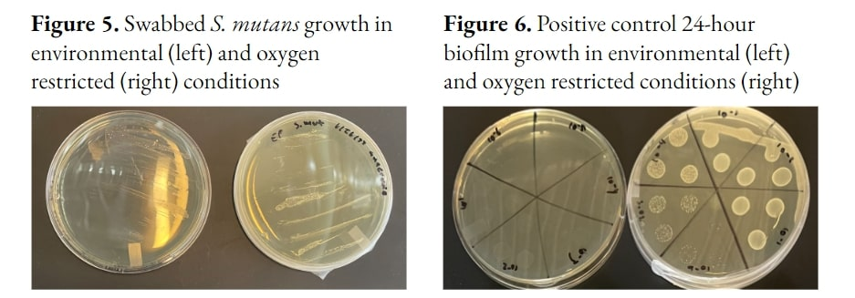
Week 3 (3/3 – 3/7)
March 5, 2024 12:05 pm
What’s in store for this week?
Most of the preparation for collecting the data is almost complete: making growth media, L.B. agar plates, and DES. The DES that I will be working with will be done by this week so as soon as I have them ready I will begin my first Minimum Biofilm Eradication Concentration (MBEC) procedure trial and collect my first round of data.
Aerobic vs Anaerobic environment?
This past week I tested whether putting the MSSA strain in an oxygen-restricted or an oxygen-rich environment affected the MSSA biofilm growth over a 24-hour incubation period. And, opposite to my theory, there was not a drastic difference. When we inspected the oxygen-restricted plate, there was a higher CFU(colony forming unit). We were able to conclude that because each circle was more inflated and bunched together rather than being able to see smaller single dots as shown in the oxygen-rich plate. I used an inoculation loop to see whether each colony was easier to pick up and there was no difference, so going forward I’ll use the non-air-restricted incubation style because it posses no significant difference if we were to restrict the oxygen.
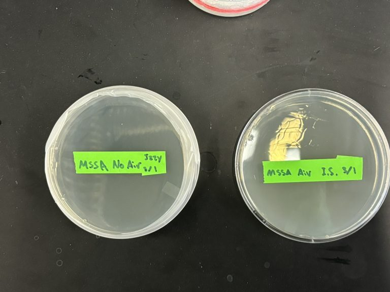
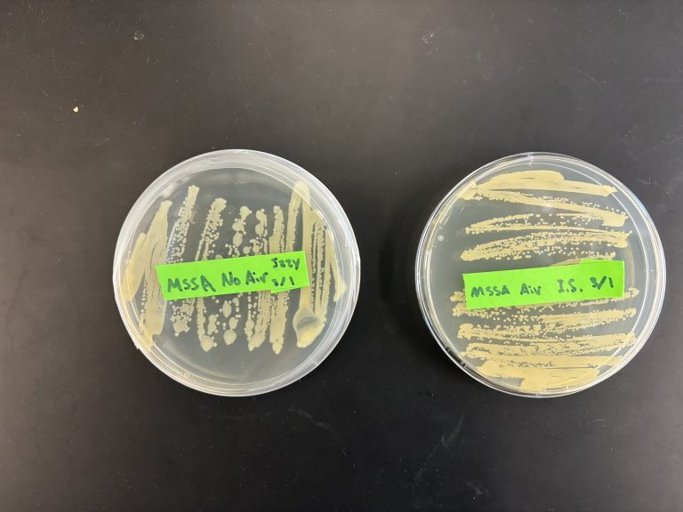
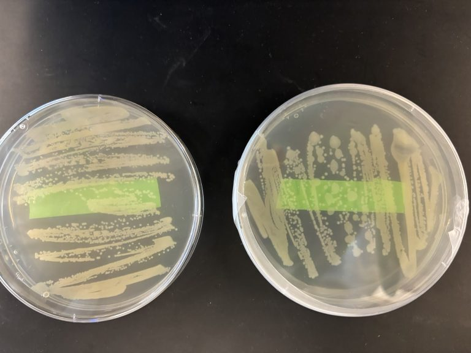
What obstacles have I encountered and how might they be overcome?
Unfortunately, the leaking pipe that caused disruption during my past project began to leak again recently. Because the pipe is connected to our water purifier and is our source of sterile, distilled water, it is a big issue for the lab. In the past, the leaking wasn’t too much of a disruption and we just put a bucket or large beaker under the leak, but now the leak is a bigger issue and is under maintenance. We hope that the leak is fixed once and for all and that we can use the large beakers for projects instead of collecting water. A solution for this could be to use another lab’s water purifier until our machine gets fixed.
Changing my DES.
In the past week, we have also decided to move forward using a different deep eutectic solvent than we initially proposed because we believe it will be more effective in eradicating the MSSA biofilms. Instead of using choline, urea, geranic acid, and arginine, we will be using a DES consisting of choline, geranic acid, cinnamic aid, and arginine. This is the DES that showed effectiveness against the pathogen we worked with prior, Streptococcus mutans, and we believe it will be as effective against MSSA.
Week 4 (3/20)
March 20, 2024 8:56 am
What’s in store for this week?
Finally back from Spring Break, and one of the three DES I need to test is done and ready for me to use! So, this week I will be running my first trial of the project! With our water purifier still broken, we will have to use another lab’s water purifier in order to clean the plates necessary for my project. I’ll first test the MSSA strain against the CAGE ionic liquid with no arginine. The results of using this ionic liquid will help us determine whether adding arginine has an effect on MSSA biofilms and how effective the ionic liquid is on its own against MSSA. Going into my first trial, I am a little nervous because in past projects, I was paired with another undergraduate student who worked in the lab and I conducted all my research under their supervision and guidance. However, this time I will be conducting research completely independently. Although I will have another lab mate in the lab with me in case of emergency, it will be up to me alone to carry out the procedure precisely and accurately.
Who is a role model for you in your workplace?
My role model in my workplace would be my first mentor who I met the first time I joined the CARE program. She taught me everything that I know about the lab and how to combat different obstacles. She has since graduated from NAU and is now attending medical school. I believe we were able to bond as mentee and mentor because of our shared interest in medicine and she quickly helped me confirm my passion for pursuing that path. She taught me that it is important to know the difference between accuracy and precision when it comes to science because they are very misused terms in the field.
Week 5 (3/27)
March 27, 2024 8:36 pm
What’s in store for this week?
Last week, I began my first trial of the experiment using the ionic liquid only containing CAGE and no arginine. The first trial is almost done and all there is left to do is to observe the results and log the data. Luckily, the ionic liquids/DES (below) are done and ready for me to continue my trials this coming week!
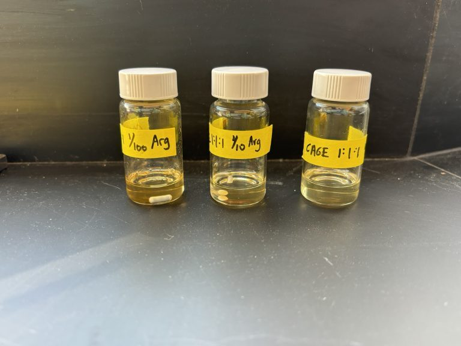
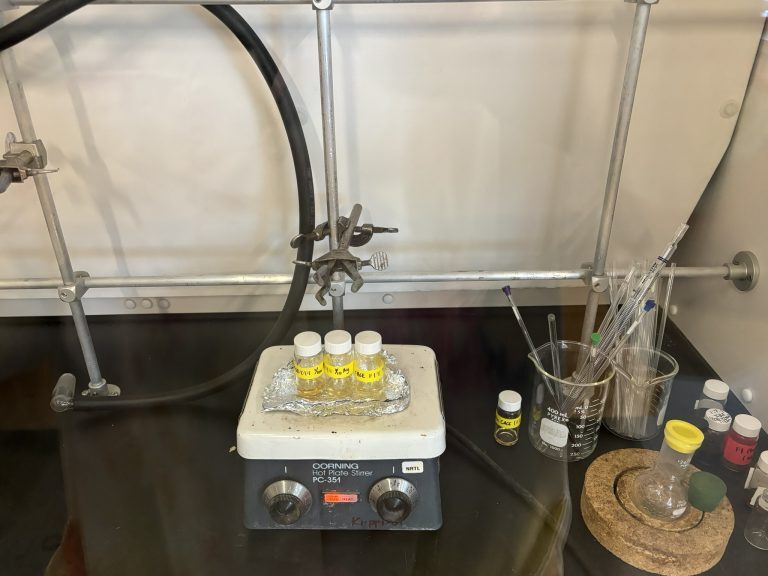
These are also some pictures of the ionic liquid dilutions for anyone interested.
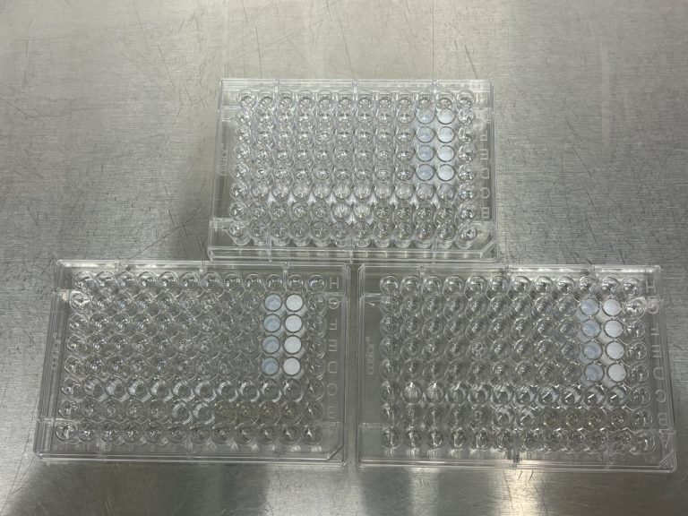
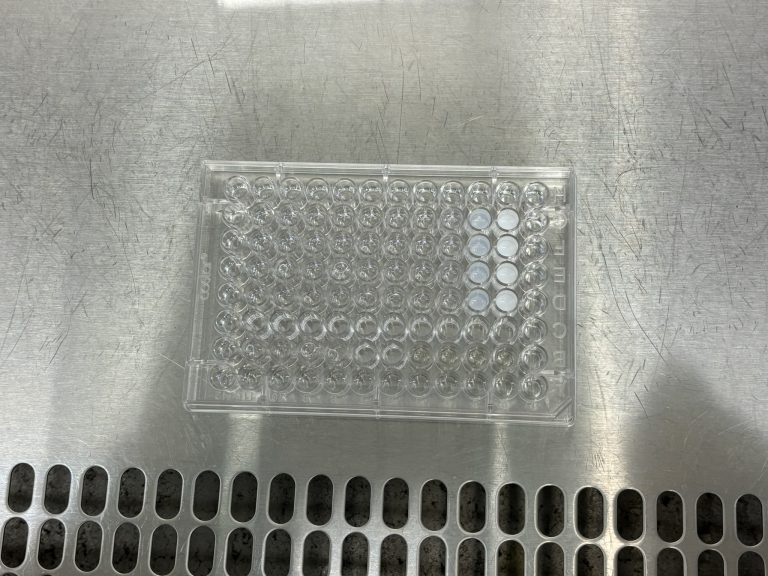
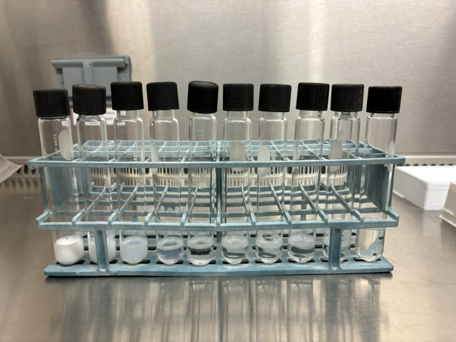
The milky white that we see on the left vial in the last picture is the ionic liquid emulsified in the 1.5% tween solvent. We are not exactly sure on why this happens because sometimes it will occur with one IL/DES and not with another.
Trial 1 results:
The first set of results will be to collect the raw MBEC (minimum biofilm eradication concentration) data. In other words, that means that I will be putting the plates with the treated biofilms into a plate reader. The plate reader will then display the absorbance levels that indicate biofilm growth in each well. The lower the biofilm growth, the more effective the treatment is for the biofilms. While this data can give us a good idea of how effective the treatment is, it does not give us conclusive evidence or any solid numbers. Thus, I will be following the MBEC assay with a CFU (colony-forming unit) assay. This second result is obtained by using the treated biofilms that were read in the plate reader, selecting wells with DES concentrations of 10%, 0.6%, and 0.02%, and diluting them another 6 times. After that, I will place them on agar plates and leave them in the incubator overnight to let them grow. I will obtain the second set of results by counting and documenting each colony that forms in each area where the biofilms were placed.
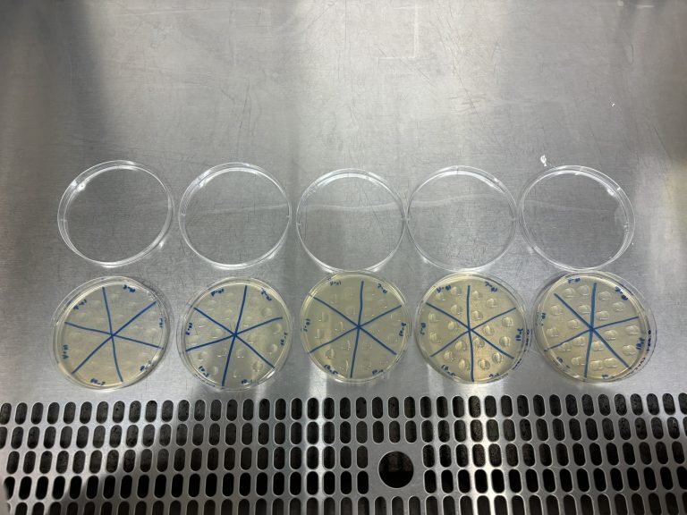
Week 6 (4/3)
April 4, 2024 9:39 pm
Short Recap:
Hello and welcome back to my senior blog post! Since my last post, I was able to collect the data from my first trial! However, the results did not show at all what we expected as I will expand on later in this post. Because the results showed to be unusable data, my professor and I decided that there must have been a hiccup in the process. We agreed to do a second trial with the same ionic liquid and be extra meticulous with every step. We decided to keep all conditions and IL concentrations the same for this trial and correct any mistakes that we think may have caused the unusual results. The results will be posted on my blog next week!
Set Backs:
There have been a few other obstacles I have encountered this week other than the unfortunate trial results. After trying to fix the nano pure machine for weeks, maintenance concluded that the leak was due to a broken pipe and suggested that we move the machine to the opposite side of the lab. When we tried this, the same part of the machine leaked, but we were fortunate enough to catch it and turn off the water before it flooded the lab. Unfortunately, before we could update maintenance with our findings, they came into the lab in hopes of fixing the leak, but the next day I came into another flooded lab…So in short…we still don’t have a nano pure machine and we are continuing to use a machine from another lab.
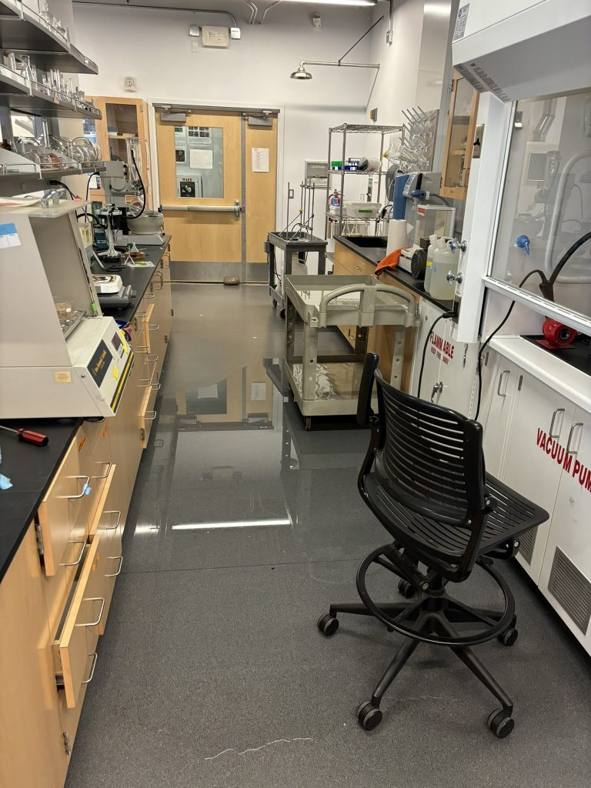
Another recent setback to my project is that one of the three ionics I planned on using for this project exploded in the lab while it was getting heated up. Thankfully everyone in the lab was unharmed and safe when it exploded, but that does mean I will have to wait another week until the new batch of deep eutectic solvent is made.
Trial 1 results:
The biggest problem and indicator that the results for the first trial were a fail is that the agar plates that were used for the CFU procedure showed absolutely no growth for the treatments. Normally, we would expect to see growth in the most diluted areas, however there showed to be none. While our positive control did show little growth, it was not nearly the colony density that we typically see or expect to see. From the abnormal positive control, we concluded that the ionic liquids aren’t just insanely effective, but there is something else preventing the biofilms from growing.
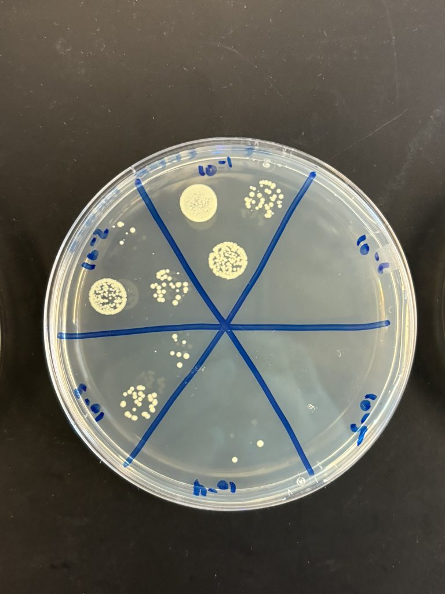
▲ Positive control
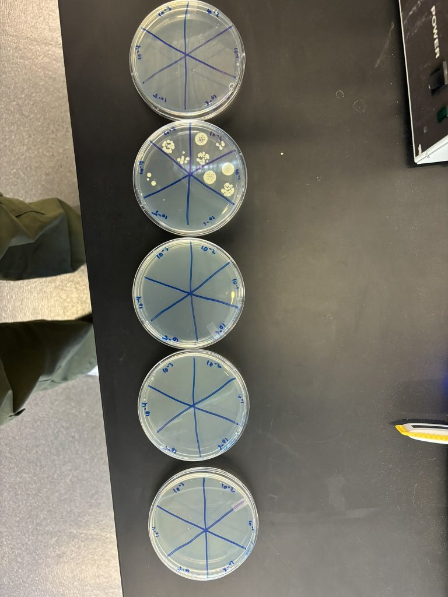
▲ All of the agar plates
We came up with a few possibilities as to what might have gone wrong. Firstly, it could have been because I added an extra step that prevented the biofilms from growing to their full potential. After incubating a few colonies of MSSA in some media overnight, the next day’s steps were to make a subculture (which is taking a few microliters of the overnight media into fresh media) and incubate that for a few hours.
Because I was unable to be in the lab for a few hours, my professor suggested that I put the overnight media in the lab fridge and make the subculture the following day. After viewing the results, my professor explained that this extra step of putting the bacteria in the fridge could have caused biofilm senescence (a process that slows bacteria metabolism and puts the biofilms in a dormant phase). My professor initially suggested the refrigeration step because most biofilms are forgiving; under most conditions, they will continue to grow to their potential. We suspect that the refrigeration caused senescence during a crucial part of the biofilm’s growth process.
Our hopes are that the second trial results will be successful and we can move on to the second deep eutectic solvent. Thank you for your questions and continued interest!
Week 7 (4/10)
April 17, 2024 9:40 pm
Hello and thank you to everyone who continues to read and support my blog!
Last week, I finished my second trial with high hopes of seeing better results than the first trial. While I was set back from a slight flooding problem in the lab, I was able to successfully finish the procedure. The results, however, were not very successful. The raw data from the second trial looked very similar to the first trial in that no growth was seen in the wells other than in the positive controls in all three plates. The CFU data on the plates corroborated seen in the 96-well plates. No growth was seen in the negative control, 10%, 0.06%, or 0.02% IL treated biofilms. The most alerting part was that the positive control showed very little growth as shown in the image below.
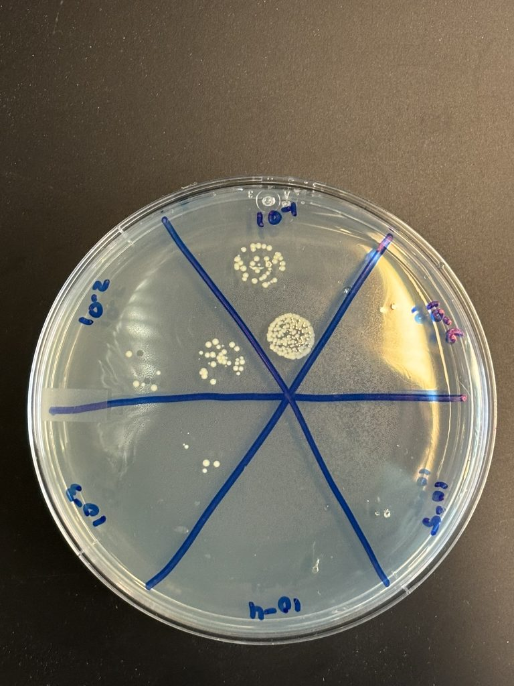
Even when I corrected what we predicted to be the issue, this trial yielded a even worse positive control.
After discussing with my professor on what else could have gone wrong or what we can do next to overcome this obstacle, we decided to try using a new strain of MSSA. The strain that I used for the first and second trial are basically a frozen stock made from a frozen stock that was made from a frozen stock. In short, the strain I used could have been “old” which could have prevented the bacteria to grow to its potential. To counteract this problem, we decided to use a fresh strain rather than a frozen stock strain and conduct a third trial with this IL. If the results do not come out as we hope, we will move on to the next DES which would be the CAGE with 1/100 molecular equivalent of arginine. This coming week, I really hope that the results are what we expect them to be, however, these types of pathogens can be hard to work with because any little thing could cause major effects.
Week 8 (4/17)
April 17, 2024 10:34 pm
Welcome back for another post!
May is coming quicker than I anticipated and I am beginning to create my poster and presentation for this project! This is my favorite part of the process because I get to put together all the components of my project and the whole process. I love using diagrams and pictures in my posters and I plan on taking information from my past posters.
For the actual update on my progress in the lab, I have the results of my third trial. As said in my previous post, for this trial, we used a fresh strain of MSSA. I inoculated it on an agar plate to take colonies from for later trials, but I also took some of the fresh strain and put it straight into five mililiters of growth media to maximize the pathogen growth. At the beginning of the procedure, I could tell that there was a lot more growth in the cultures and subcultures I made of the MSSA colonies and so I had very high hopes. When seeing the final results, the agar plates and raw data still showed little to no growth. However, the positive control displayed a significant increase in growth.
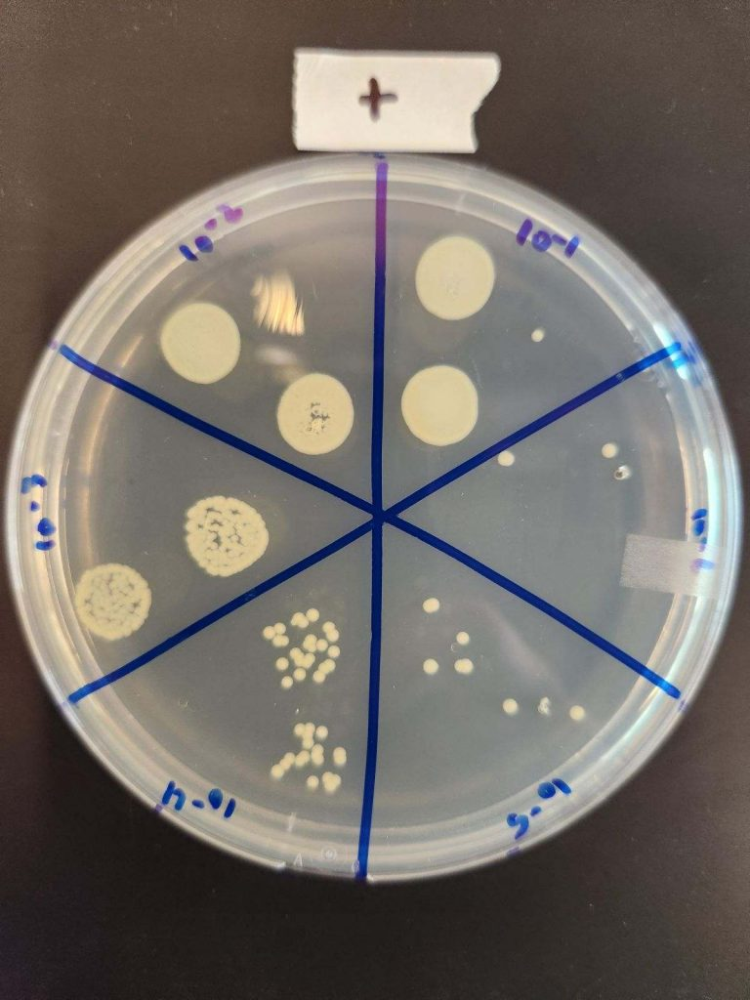
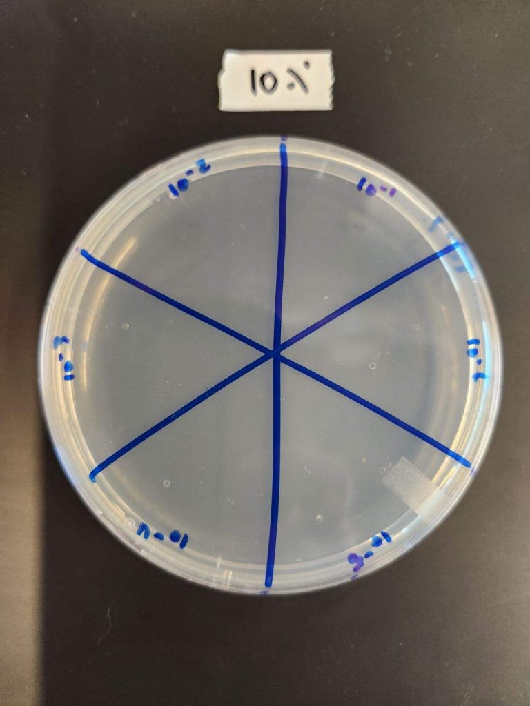
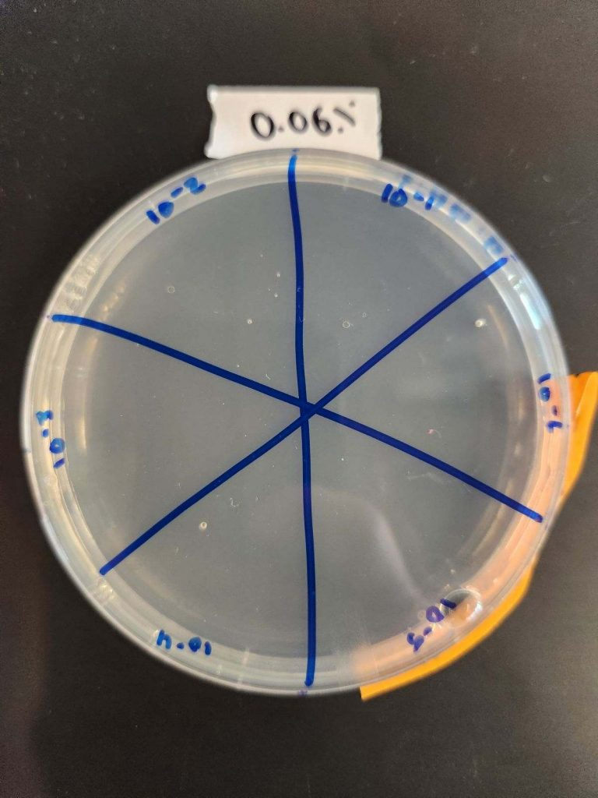
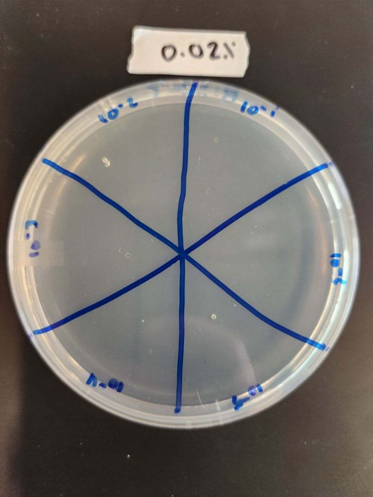
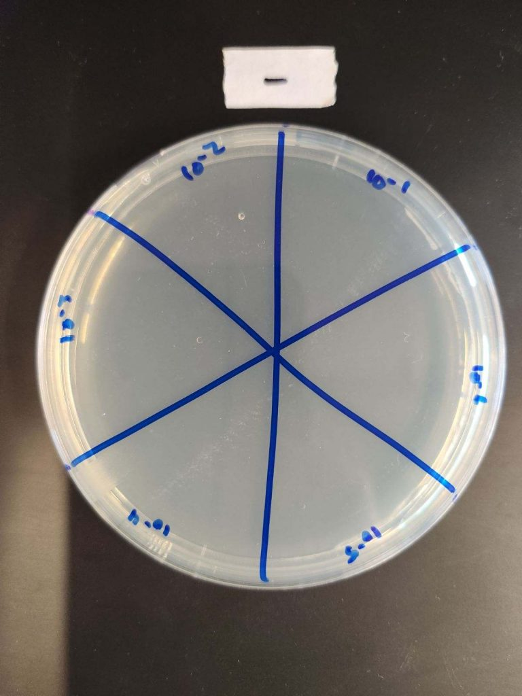
While this data neither supports nor rejects my project’s hypotheses, it does show progress that there is significantly more growth in the biofilms compared to the first two trials.
This coming week I will be moving forward with my first trial with the DES containing CAGE with a 1/100th molar equivalent of arginine. I will also be decreasing the concentrations of the DES so that we can observe biofilms that will be treated with a 2.5%, 0.15%, and 0.004% concentrations. My hopes are that decreasing the concentrations will allow us to see if the biofilms will grow at a lower potency. While there is a high probability that I may not finish this project with conclusive data, I will continue to do the most I can with the limited time that I have for this project.
Week 9 (4/24)
May 1, 2024 11:26 pm
Hello and welcome back!
Last week, I began and finished my first trial with the ionic liquid containing 1/100th molar equivalent of arginine.
While hopes were high that the results would come out as we hoped, unfortunately, it did not. When I went to check the agar plates to collect the colony forming unit (CFU) data, there was, once again, no growth on any plates except for a little growth on the positive control plate.
Because I had a very similar outcome when I worked with the S. mutans strain last summer, I wanted to see one more time whether restricting air had an effect or not on the growth of MSSA. When I researched for any articles if oxygen might have an effect on the growth of MSSA biofilms, I did not see any results. However, since it is a similar oral pathogen to S. mutans, I was wondering if it would react differently. I did try to test this during my first week of blogging and I determined that there was no significant difference, but I wanted to try it again and leaving it in the incubator for two days instead of overnight.
I also wonder if inoculating more colonies into the media during the first step of the procedure might have an effect on the biofilm growth. In standard practices with inoculating colonies into media, I would take 2-3 colonies and put them in media overnight. Usually when I would take the culture out the next day, the media would be cloudy or opaque from the pathogen, but I realized when working with MSSA the culture would not be as opaque even after leaving it in the incubator for a substantially longer amount of time.
While I wish I could try one more trial using the IL/DES against MSSA, I decided with my professor that we might not have enough time to conduct another trial and get the necessary data with our time crunch.
This next week, I will be putting together the data that I have and try to compare it with the data I collected last year with the S. mutans strain!
Week 10 (5/1)
May 1, 2024 11:27 pm
It is bittersweet to see that senior year and the senior projects are coming to an end soon, but I wanted to thank all my readers and supporters for following me along on this journey! I am so thankful for this community and the opportunity to do what I love and to be able to share it with others.
For my update, this week I mostly tried making some sense of the data that I had collected thus far. It was a little difficult to try comparing the results at all because the agar plates showed no growth anywhere except the positive control and the raw data showed no conformity or significant evidence that there was a gradual effect of the IL/DES. It was also difficult to compare the results of the MSSA data with the S. mutans data because I had problems with S. mutans as well and the data we collected was very preliminary and inconclusive to say that the IL/DES had an effect on the S. mutans biofilms.
I may try putting the data into a graph, but it may be futile with the data that I have. I think that my best bet for trying to compare the data is to just compare and contrast the raw MBEC data of the MSSA and S. mutans data. I may put in a few examples of what we would expect to see to further the comparison.
With my project coming to an end, and the data not turning out how I hoped, I was worried that I would not have anything to present, but after hearing from several people that this happens quite often, I am excited to share my experience. Most of my presentation will consist of the obstacles that I had overcome, the things I learned along the way, and what I would change about my project or what I would do in the future with what I now know. Thank you for the continuous support of my blog and project!